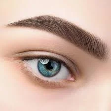
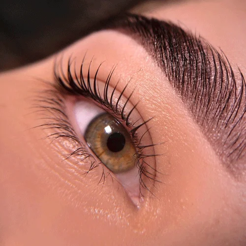
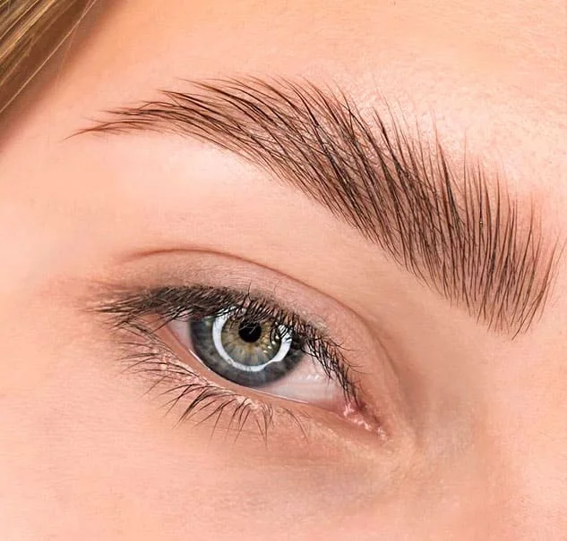

Ідеальні брови за 3 прості кроки
Я особисто працюю над кожною деталлю — від моделювання до фарбування — щоб створити брови, які підкреслять саме вашу красу. Кожен етап підбираю індивідуально: за формою обличчя, стилем і побажаннями. Моя мета — щоб ви почувалися впевнено, комфортно і виглядали чудово.
Мої навички
Брови
Розкажіть, яку форму брів ви полюбляєте, як зазвичай доглядаєте за ними і якого ефекту хочете — м’якого, чіткого чи виразного. Так я зможу підібрати ідеальну форму та відтінок саме для вас!
Ламінування
Ваші брови неслухняні, ростуть у різні боки чи втрачають форму? Ламінування допоможе зафіксувати кожну волосинку, зробити брови візуально густішими, доглянутими та піднятими.
Корекція
З’явились зайві волоски, асиметрія або зникла форма? Я акуратно приберу все зайве, не залишаючи подразнень, і поверну вашим бровам охайний вигляд. Швидко, комфортно і без болю.



Яна
Твій бровист
- Чистота | Акуратність
- 2 роки досвіду